ORIGINAL RIBBON MONOGRAM
A clear sense of self.
One continuous ribbon. Two open forms. An original Boralances signature that brings the same clarity to a desktop, an application icon and a first hello.
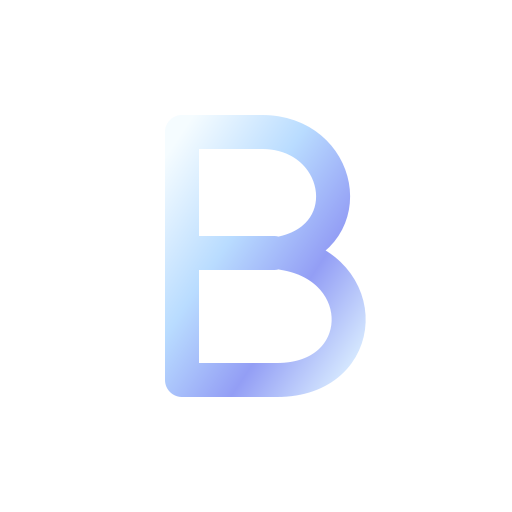
BoralancesOS
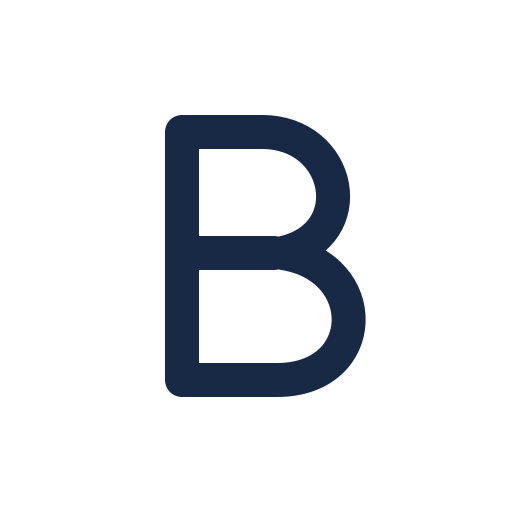
One family. Every application.
10 ORIGINAL VECTOR ICONS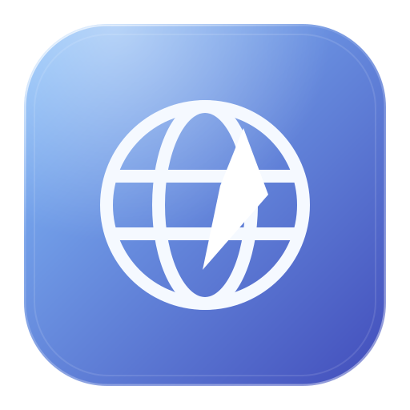
Browser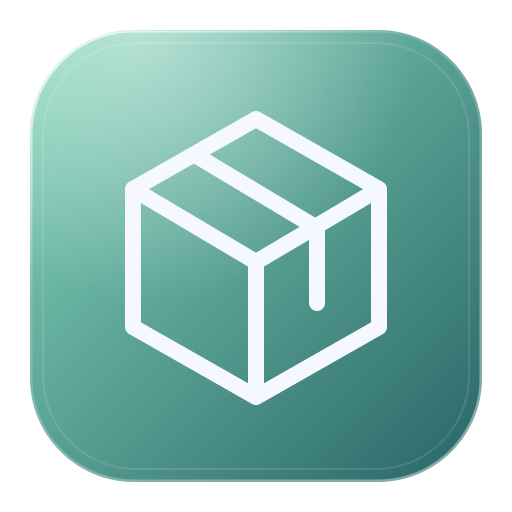
Launcher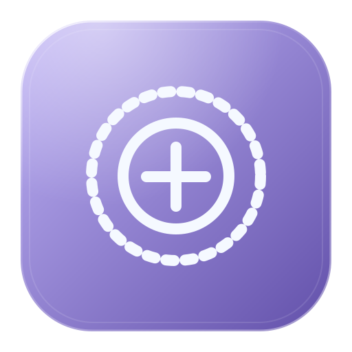
JARVIS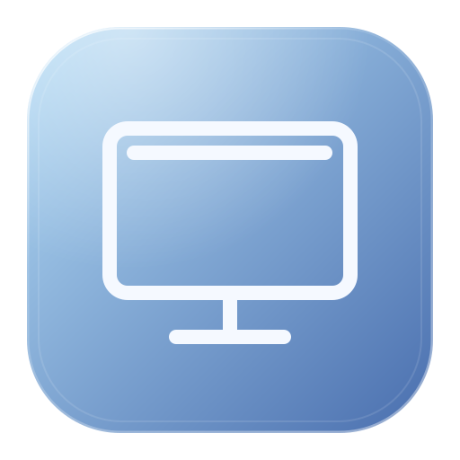
Glass Connect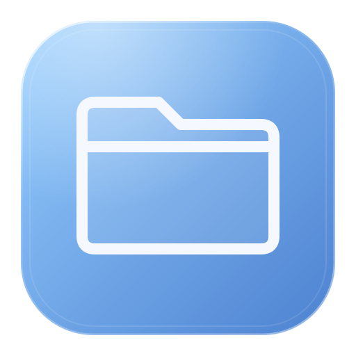
Files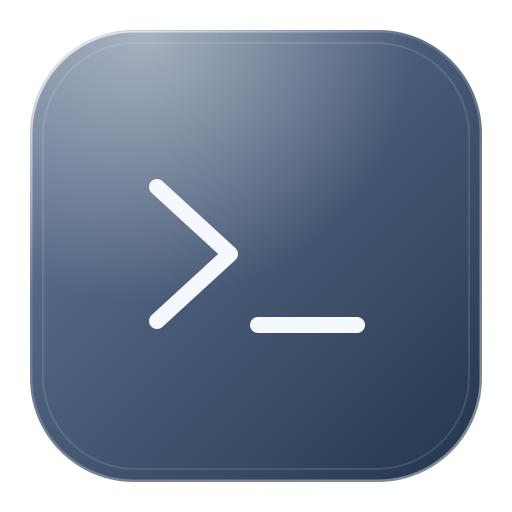
Terminal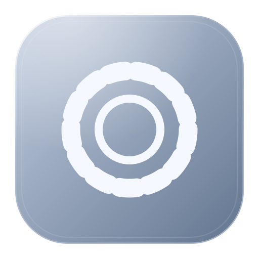
Settings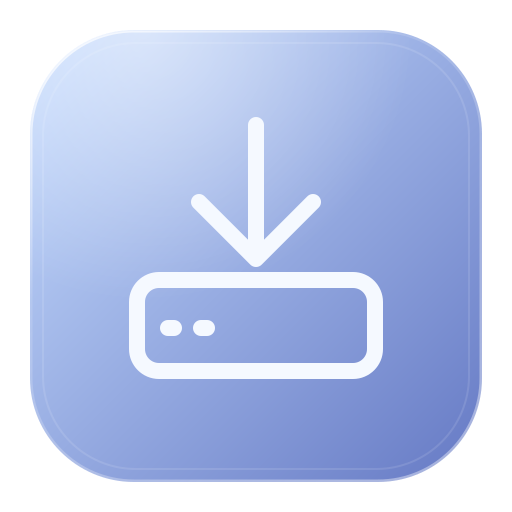
Installer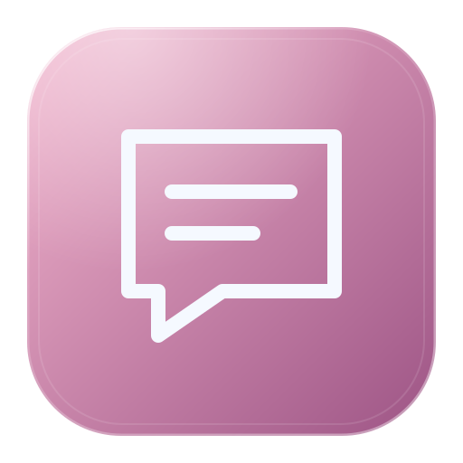
Chat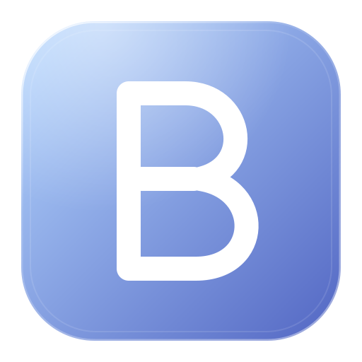
BoralancesOSA considered palette.
SOFT LIGHT / DEEP CONTRASTObsidian · #0A0D18
Ink · #21334E
Glacier · #BDDAFF
Iris · #B5A5EF
Mint · #A4E7D7
Mist · #EDF1F8